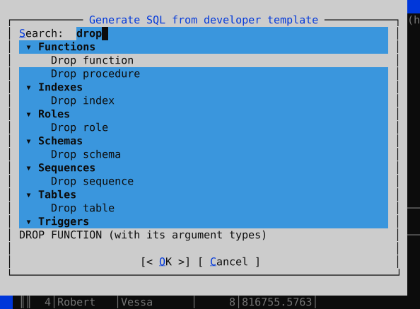
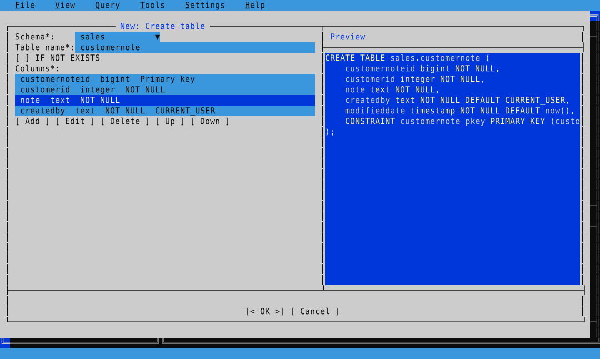
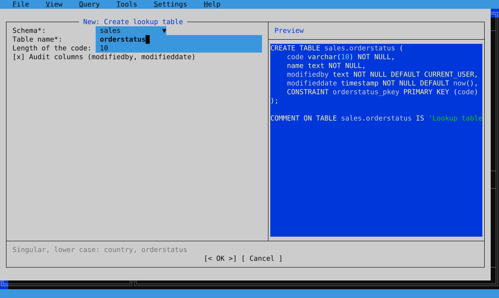

Developer templates (F7)
A developer template is a parameterised SQL script: a .pgtemplate file with a
parameter declaration (TOML) and a Jinja body. F7 in a query tab renders one from a generated form —
CREATE TABLE, CREATE FUNCTION, DROP INDEX, … — and inserts the resulting SQL
text at the cursor. Templates are user-editable, with the template editor or any
text editor.
Installing the templates
pgtc reads templates from one folder in the user's data directory and from nowhere else. The built-in templates are embedded in the executable and must be installed into that folder once:
- on the command line:
pgtc --setuporpgtc --install-templates; - or in the program: (or ).
Until then F7 answers No developer templates — run Settings → Install templates.
If the folder already exists — after an upgrade of pgtc, for example — installing first asks whether to overwrite the built-in templates. Yes writes every embedded file over the file of the same path; No changes nothing. In both cases:
- pgtc never deletes a template file;
- files under other paths — your own templates — are never touched.
shows the path of the folder (see also below).
Using a template
- Go to a connected query tab and put the cursor where the SQL is to be inserted.
- Press F7 (Esc 7, or ).
- Choose a template in the picker and press Enter.
- Fill in the form. The preview on the right is the rendered SQL, updated on every change.
- Press Enter on OK (or Ctrl+Enter from any field, where the terminal reports it). The SQL is inserted into the editor at the cursor; a selection is replaced.
- Review it, edit it if needed, and execute it with F5.
A template never executes its result. It only inserts text into the editor.
The tab must be connected: the form's choice lists — schemas, tables, types — are read from the catalogs of the
tab's database over the tab's own session, and the template is resolved and rendered for that server's
server_version_num. While the tab's session is busy — a statement is running, a result is paused with
more rows to fetch, or an export runs — F7 is refused: finish or close the result first.
The picker

description of the selected template.The picker shows the templates folder as a tree: the directories are the sections (Functions,
Indexes, Tables, …), the rows below are the templates, labelled with the name from their
header. The folder is scanned each time the picker opens, so a file added or changed outside pgtc is picked up
without a restart.
| Key | Action |
|---|---|
| Up / Down, PgUp / PgDn | Move in the tree. |
| Enter | Opens the form of the selected template. |
| Alt+S | Focuses the Search box. |
| Esc | Closes the picker. |
- A file whose header cannot be parsed is listed as file name (error), with the parser's message in the description line.
- A template that exists only in version folders newer than the tab's server is listed as file name (not for this server version) (see version folders).
Searching

drop typed into Search: only the DROP templates remain.Search filters the tree by a case-insensitive substring match on the template's
name, description and path (section and file name). So index finds Create index and
Drop index, and enum finds Create enum type and — through its description — Drop
type.
The built-in templates
| Section | Template | Parameters |
|---|---|---|
| Functions | Create function | Schema, name, arguments (name, type, default), return type, language, volatility, SECURITY DEFINER, body |
| Create procedure | Schema, name, arguments, body | |
| Drop function | The function (with its argument types), IF EXISTS, RESTRICT / CASCADE | |
| Drop procedure | The procedure, IF EXISTS, RESTRICT / CASCADE | |
| Indexes | Create index | Table, name, UNIQUE, CONCURRENTLY, access method, columns or expressions with their sort order, NULLS NOT DISTINCT, WHERE predicate |
| Drop index | The index, IF EXISTS, RESTRICT / CASCADE | |
| Roles | Create role | Name, LOGIN, CREATEDB, member of |
| Drop role | The role, IF EXISTS, and optionally a role to reassign its owned objects to | |
| Schemas | Create schema | Name, owner, IF NOT EXISTS |
| Drop schema | The schema, IF EXISTS, RESTRICT / CASCADE | |
| Sequences | Create sequence | Schema, name, START, INCREMENT, OWNED BY |
| Drop sequence | The sequence, IF EXISTS, RESTRICT / CASCADE | |
| Tables | Create table | Schema, name, IF NOT EXISTS, columns (name, type, NOT NULL, primary key, default) |
| Drop table | The table, IF EXISTS, RESTRICT / CASCADE | |
| Triggers | Create trigger with function | Table, name, timing, INSERT / UPDATE / DELETE events, row or statement level, body |
| Drop trigger | The trigger (with its table), IF EXISTS, RESTRICT / CASCADE | |
| Types | Create enum type | Schema, name, labels |
| Create domain | Schema, name, base type, NOT NULL, CHECK | |
| Drop type | The type (enum, composite, range), IF EXISTS, RESTRICT / CASCADE | |
| Drop domain | The domain, IF EXISTS, RESTRICT / CASCADE | |
| Views | Create view | Schema, name, query |
| Create materialized view | Schema, name, query, WITH DATA | |
| Drop view | The view, IF EXISTS, RESTRICT / CASCADE | |
| Drop materialized view | The materialized view, IF EXISTS, RESTRICT / CASCADE |
The form

The form fills the window. On the left is one field per declared parameter, on the right the preview: the SQL that OK would insert, rendered again after every change. On a narrow terminal the preview is below the fields.
- A
*after a label marks arequiredparameter. - The line above the buttons shows the
helptext of the focused parameter, if it has one. - If validation or rendering fails — a required parameter is empty, an identifier is invalid, the body has a Jinja error — the preview shows the error instead of SQL, and OK inserts nothing.
| Key | Action |
|---|---|
| Tab / Shift+Tab | Next / previous field or button. |
| Enter | On OK: inserts the SQL. On a drop-down: opens it. On a list: edits the row. In a SQL box: a line break. |
| Ctrl+Enter | OK from any field (where the terminal reports it). |
| Esc | Closes the form without inserting anything. |
Field kinds
| Parameter type | Widget | Input and validation |
|---|---|---|
Text (text) | An input line | Free text, passed to the body unchanged. For SQL fragments that are not identifiers: a return type, a default expression. |
Identifier (identifier) | An input line | An identifier as it is stored in the catalog, unquoted. Validated: at most 63 bytes (an empty value only fails a required parameter). The body quotes it with the ident filter — type Order Items, get "Order Items". |
Number (number) | An input line | Must parse as a number; reaches the body as an integer or a float. |
Boolean (bool) | [ ] / [x] | Space toggles it. |
Choice (choice) | A value with ▼ | Enter or Space opens the list; Left / Right change the value directly. See drop-down lists. |
List (list) | Rows with buttons below | See Lists. |
SQL (sql) | A framed editor titled with the parameter's label | See SQL boxes. |
Choice lists read from the catalogs

16/19
in the frame: typing narrows the list; entry 16 of 19 is selected.Parameters such as Schema, Table, Owner list the objects of the tab's database. When the form
opens, pgtc runs one catalog query per such parameter on the tab's session (loading… until the rows
arrive). Relations, types and routines are listed schema-qualified (sales.customer), functions and
procedures with their identity argument types. Objects in pg_catalog, information_schema,
and the pg_toast* / pg_temp* schemas are excluded, as are members of extensions
(pg_depend.deptype = 'e'); the exact query of each list is under source.
- The queries run inside whatever transaction the tab's session has open. In an aborted transaction block the
server rejects them and each list shows error: … with the server's message;
ROLLBACKfirst. - A long list is filtered by typing: open it and type a part of the name.
Defaults from the tree's selection
If the object selected in the object tree belongs to the same server and database as the query tab, the
choice parameters with a built-in source take their initial value from it:
- a table, partition or foreign table selected → Drop table is preset to that table, Create index has it as its table;
- any object inside a schema → the
schemasparameter of Create table, Create function … is preset to that schema; - a trigger selected → Drop trigger is preset to that trigger and its table;
- a role selected → a
rolesparameter is preset to it; roles are cluster-wide, so only the server has to match.
The shortest way to a DROP TABLE statement: select the table in the tree, go to a query tab,
F7, Drop table, Enter. Any other value can still be chosen in the drop-down.
Lists: columns, arguments, labels
A list parameter holds any number of rows — the columns of a table, the arguments of a function. Each
row is shown on one line; below the list are its buttons.

note: a dialog with the fields of one row.| Button | Action |
|---|---|
| Add | Opens the row dialog, empty; OK appends the row. |
| Edit | Opens the row dialog with the selected row. Enter on a row does the same. |
| Delete | Removes the selected row. |
| Up / Down | Move the selected row. Row order is the iteration order of the body's {% for %} loop. |
In the list, Up / Down select a row; Tab moves on to the buttons. The row dialog validates its fields like the form does (required, identifier, number) before the row is accepted.
SQL boxes

help text.A sql parameter — a function body, the query of a view, a CHECK expression — is a
multi-line SQL editor inside the form. Its text reaches the body verbatim, line breaks included.
- The usual editor keys work: movement, selection, clipboard, undo, syntax highlighting.
- Autocomplete works as in the query tab; Esc closes only its popup, not the form.
- Enter inserts a line break; Tab leaves the box for the next field.
- Pasting long text is supported.
The DROP templates
Every DROP template has the same two options:
| Option | Default | Meaning |
|---|---|---|
| IF EXISTS | off | On: a missing object raises a notice instead of an error. |
| Dependent objects | RESTRICT | RESTRICT: the statement fails if any object depends on the one dropped. CASCADE: dependent objects are dropped as well (views on a table, foreign-key constraints referencing it, …). |
Drop role has no CASCADE, because DROP ROLE has none. Instead it offers
Reassign owned objects to: choose a role, and the script starts with
REASSIGN OWNED BY old_role TO new_role;
DROP OWNED BY old_role;
DROP ROLE old_role;with a comment noting that REASSIGN OWNED and DROP OWNED act on the current database
only — a role that owns objects in several databases needs them run in each.
Writing your own templates
A template is a UTF-8 text file with the extension .pgtemplate. The
developer template editor
() writes the file, validates it and renders a preview while
you type.
The rest of this page is the specification of the file — what the editor writes, and what any text editor can write into the templates folder.
Where the files go
| Platform | Templates folder |
|---|---|
| Linux | ~/.local/share/pgtc/developer_templates |
| macOS | ~/Library/Application Support/pgtc/developer_templates |
| Windows | %APPDATA%\pgtc\developer_templates |
developer_templates/
default/ templates for every server version
Functions/
function.pgtemplate
drop_function.pgtemplate
Tables/
table.pgtemplate
Our team/ your own section
audit_table.pgtemplate
12_plus/ overrides for PostgreSQL 12 and newer
Triggers/
trigger.pgtemplate- The first level is a version folder:
defaultorN_plus. Your templates go intodefault. Other directories at this level are ignored. - The directories below it are the sections shown in the picker; they can be nested. A new directory is a new section.
- Only files named
*.pgtemplateare read. The file name is arbitrary; the picker shows thenamekey of the header.
Version folders
A template is identified by its path below the version folder (Triggers/trigger.pgtemplate). A file
with the same path in a folder N_plus — 15_plus, 16_plus — overrides it
for servers of major version N and newer. For the server of the query tab, pgtc takes the file from the
N_plus folder with the highest N ≤ the server's major version; if none qualifies, the file in
default. (For small differences an override is not needed — see the
feature test in the body.)
If you change a built-in template, save it under another file name (and give it another
name). Installing the templates again overwrites the built-in files, but never touches files under other
paths. (The template editor warns when you save such a file.)
The file
A template has two parts, each introduced by a line containing only +++; the first line of the file
must be the first +++:
+++
header: TOML — name, description and the parameter declarations
+++
body: a Jinja template that renders to SQLA complete, small example — a lookup table with a team's standard columns. Save it as
default/Our team/lookup_table.pgtemplate:
+++
name = "Create lookup table"
description = "A code / name table with our standard columns"
[[param]]
name = "schema"
label = "Schema"
type = "choice"
source = "schemas"
default = "public"
required = true
[[param]]
name = "name"
label = "Table name"
type = "identifier"
required = true
help = "Singular, lower case: country, orderstatus"
[[param]]
name = "code_length"
label = "Length of the code"
type = "number"
default = "10"
[[param]]
name = "with_audit"
label = "Audit columns (modifiedby, modifieddate)"
type = "bool"
+++
CREATE TABLE {{ schema|ident }}.{{ name|ident }} (
code varchar({{ code_length }}) NOT NULL,
name text NOT NULL,
{% if with_audit %}
modifiedby text NOT NULL DEFAULT CURRENT_USER,
modifieddate timestamp NOT NULL DEFAULT now(),
{% endif %}
CONSTRAINT {{ (name ~ "_pkey")|ident }} PRIMARY KEY (code)
);
COMMENT ON TABLE {{ schema|ident }}.{{ name|ident }} IS 'Lookup table';Press F7: the picker has a new section Our team with Create lookup table, and the form has four fields.


help text of
Table name at the bottom, and the rendered SQL.The header
The header is a TOML document. Unknown keys are an error: the template is listed as (error) and cannot be opened.
| Key | Meaning |
|---|---|
name | String. The label in the picker. Absent or blank: the file name without its extension. |
description | String. One line shown under the picker's tree; matched by the search box. |
[[param]] | Array of tables: one table per parameter. The form shows the parameters in document order. |
Keys of a [[param]] table:
| Key | Required | Meaning |
|---|---|---|
name | yes | String. The variable name in the body: {{ name }}. Letters, digits, _; unique within the template (within the row, for the fields of a list). |
type | yes | String. The parameter type — see the next table. |
label | String. The field's label in the form. Default: the name. | |
required | Boolean. true: an empty value fails validation; the form marks the field with *. | |
default | The initial value: a string (a number is accepted too); for a bool parameter the boolean true. | |
help | String. A hint shown at the bottom of the form while the field has the focus. |
Parameter types
type | Form widget | Additional keys | Value in the body |
|---|---|---|---|
text | An input line | A string, as typed. | |
identifier | An input line; validated: at most 63 bytes | A string: the unquoted identifier. Write {{ x|ident }} to quote it where PostgreSQL requires it. | |
number | An input line; must parse as a number | An integer or a float (a string, when the parameter is a field of a list). | |
bool | A checkbox | A boolean: {% if x %}…{% endif %}. | |
choice | A drop-down | Exactly one of:options = ["a", "b"] — fixed values;source = "tables" — a built-in catalog query (below);query = "SELECT …" — a custom query; its first column supplies the values | The chosen value: a string, or for a schema-qualified source an object with attributes (below). |
sql | A SQL box, 5 rows high | fill = true: the box takes all rows the form has left (not allowed for a field of a list) | A string, with its line breaks. |
list | A list of rows with Add / Edit / Delete / Up / Down | [[param.fields]] tables: the fields of one row, declared like [[param]]. A list cannot contain a list. | A sequence of maps: {% for r in x %}{{ r.field }}{% endfor %}. |
A list declaration — the indentation of the nested tables is cosmetic:
[[param]]
name = "columns"
label = "Columns"
type = "list"
required = true
[[param.fields]]
name = "col_name"
label = "Name"
type = "identifier"
required = true
[[param.fields]]
name = "col_type"
label = "Type"
type = "text"
default = "text"Choice lists from the catalogs: source
source | Rows | {{ value|ident }} renders |
|---|---|---|
schemas | pg_namespace | sales |
tables | pg_class, relkind r, p, f: tables, partitioned tables, foreign tables | sales.customer |
views | pg_class, relkind = 'v' | sales.vsalesperson |
materialized_views | pg_class, relkind = 'm' | sales.mv |
sequences | pg_class, relkind = 'S' | sales.customer_customerid_seq |
functions | pg_proc, prokind = 'f', with pg_get_function_identity_arguments() | sales.customer_total(integer, integer) |
procedures | pg_proc, prokind = 'p', with their identity arguments | sales.close_month(date) |
types | Data types for a column: a fixed list of common built-in type names (integer, text, timestamptz, double precision, …), then the non-array base, composite, domain, enum and range types of pg_type outside the system schemas | integer, double precision, sales."Order Status" |
user_types | pg_type: enum, stand-alone composite, range and base types — no domains, no array types, no multirange type owned by a range | sales.orderstatus |
domains | pg_type, typtype = 'd' | public."Flag" |
indexes | pg_index: indexes that DROP INDEX accepts — not those backing a primary-key, unique or exclusion constraint, not the partitions of a partitioned index | sales.ix_customer_territoryid |
triggers | pg_trigger, NOT tgisinternal, without triggers that depend on a parent trigger (pg_depend.deptype = 'P': the clones on partitions) | trg ON sales.customer |
roles | pg_roles, all rows | reporting |
- Every list except
rolesexcludespg_catalog,information_schemaand thepg_toast*/pg_temp*schemas. Extension members are excluded from all lists excepttypes,triggersandroles. - The value of a schema-qualified source is an object:
{{ table.schema }}and{{ table.name }}are its unquoted parts; a function or procedure value also hasargs, a trigger valuetable.{{ table }}renders the unquotedschema.name;{{ table|ident }}quotes each part separately —sales."Order Items"— and keeps the argument list or theON schema.tableclause. - A built-in type name of the
typessource has no schema part.identwrites it as it is (integer,double precision) and quotes only the types read frompg_type, so{{ base_type|ident }}is safe for every entry of the list. - These built-in sources are the ones the tree's selection presets. A list from a custom
queryis not preset.
A custom query
- It must be a single statement starting with
SELECT,WITH,VALUESorTABLE; anything else is refused before it is sent. - The first column supplies the values, as text. The value in the body is a plain string.
- It runs on the tab's session when the form opens — before you have seen any SQL — so pgtc makes it
side-effect free: with no transaction open it is wrapped in
BEGIN READ ONLY…ROLLBACK; inside the tab's open transaction it runs under a savepoint that is rolled back and released.
The body
The body is a Jinja template, rendered by minijinja, whose output is the SQL. The declared parameters are its variables. The constructs that cover most templates:
| Syntax | Meaning |
|---|---|
{{ name }} | Expression: the value of parameter name, verbatim. |
{{ name|ident }} | The ident filter: the value as an identifier, double-quoted unless it matches [a-z_][a-z0-9_]* and is not a reserved, type-name or column-name key word; embedded " doubled. Use it for every identifier — schema, table, column, function. |
{{ text|qtLiteral }} | The value as a string literal: O'Brien → 'O''Brien'. |
{% if flag %} … {% endif %} | Statement tag: the enclosed text is emitted if the value is true — a checked bool, a non-empty string, a non-empty list. {% elif %} and {% else %} are supported. |
{% if method != "btree" %} … {% endif %} | A comparison. |
{% for c in columns %} … {% endfor %} | Iterates over the rows of a list parameter; inside, {{ c.col_name }} is a field of the row. |
{% if not loop.last %},{% endif %} | Inside a for: a comma after every row except the last. |
{{ (name ~ "_pkey")|ident }} | ~ concatenates strings: here a constraint name derived from the table name, then quoted as one identifier. |
{{ server_version }}, {{ database }} | Context variables present in every template: the server's server_version_num as an integer (170002) and the name of the tab's database. |
{% if has("NullsNotDistinct") %} … {% endif %} | A feature test against pgtc's feature table: true if the server's version has the named feature. An unknown feature name is a rendering error. Lets one file serve several PostgreSQL versions. |
The complete body of Create table, as an example of a loop and conditions:
{% set pk = columns|selectattr("primary_key")|list %}
CREATE TABLE {% if if_not_exists %}IF NOT EXISTS {% endif %}{{ schema|ident }}.{{ name|ident }} (
{% for c in columns %}
{{ c.col_name|ident }} {{ c.col_type }}{% if c.not_null or c.primary_key %} NOT NULL{% endif %}{% if c.col_default %} DEFAULT {{ c.col_default }}{% endif %}{% if not loop.last or pk %},{% endif %}
{% endfor %}
{% if pk %}
CONSTRAINT {{ (name ~ "_pkey")|ident }} PRIMARY KEY ({% for c in pk %}{{ c.col_name|ident }}{% if not loop.last %}, {% endif %}{% endfor %})
{% endif %}
);Whitespace control: the environment is configured with trim_blocks and lstrip_blocks. A
{% … %} tag consumes the line break that follows it and the indentation before it, so a line holding
only a statement tag leaves no empty line in the output. Trailing whitespace of the whole result is trimmed and one
line break is appended.
Undefined variables: a name that is neither a declared parameter nor a context variable renders as an empty string — it is not an error at rendering time. The template editor reports such names as Not declared.
Tips
- Start from a copy. The installed files in
default/use every parameter type. Copy one to a new file name and change it — Copy in the template manager does it. - Test in the form. In the template editor press F5. For a file written by hand: save it, press F7 in a query tab and open the template — the preview renders it at once. A TOML error in the header (a missing quote, an unknown key) is reported when the template is opened; a Jinja syntax error in the body is shown in the preview instead of the SQL.
- Keep the form short. Declare parameters for what differs each time; write the rest into the body.
- Not supported (for now): showing or hiding a field depending on another one, cross-field validation, forms with
several pages. An
{% if %}in the body covers most of these.